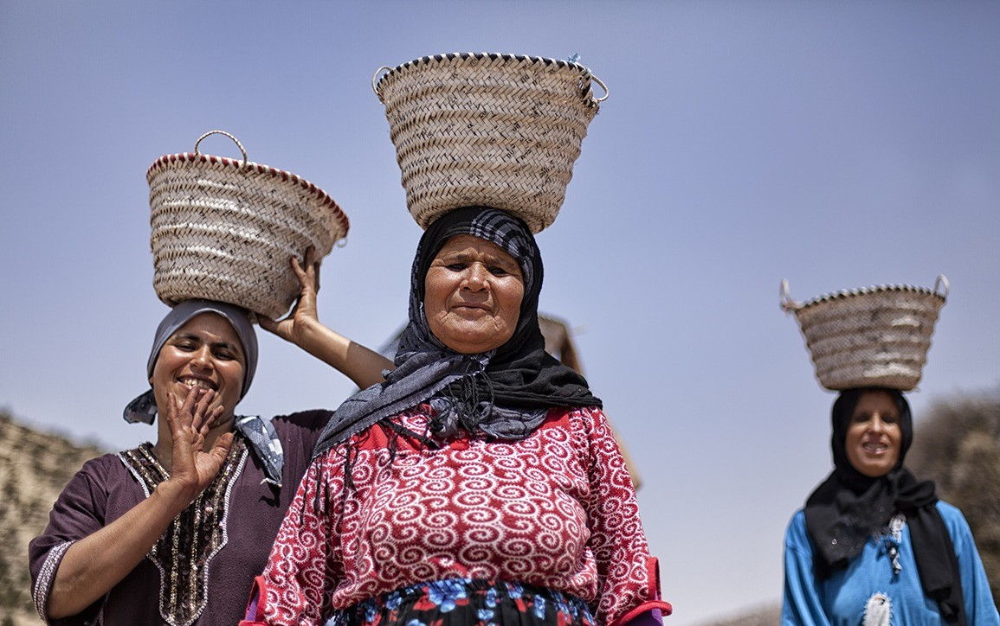

Sena3timate
أول منصة مغربية لتعلم الخياطة بالدارجة.
بدينا هاد المشروع باش نساعدو النساء المغربيات يتعلمو الخياطة بطريقة بسيطة ومفهومة.
فهمنا أن التعليم بالدارجة يكون أكثر وضوحاً وقرباً للمتعلمات، خاصة في مجال الحرف التقليدية اللي كانو كيتوارثو من جيل لجيل.

Sena3timate هي منصة تفاعلية كتضم:
- وحدات تعليمية مترتبة من المبتدئ للمتقدم
- فيديوهات شرح بالدارجة المغربية
- اختبارات لتقييم التقدم
- قاموس مصطلحات الخياطة
- مشاريع عملية للتطبيق
الهدف هو تمكين النساء من تعلم مهارة الخياطة اللي تقدر تخليهم يحققو الاستقلالية المالية أو يطورو هواياتهم الشخصية.
"مع بعض، نخيطو مستقبل أعدل، أحر، أكرم."
ابدا التعلم دابا
مجاني 100% للجميع